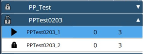

Modifica
Aggiungi pacchetti del piano di produzione
Questa funzione consente di aggiungere i pacchetti del piano di produzione all’elenco del piano di produzione. I file originali possono essere su disco locale, disco rimovibile o disco di rete. Verranno elencati i pacchetti del piano di produzione aggiunti e i sotto-job che appartengono ai pacchetti del piano di produzione verranno classificati al di sotto.

Blocca/sblocca piano di produzione

Questa funzione serve a bloccare/sbloccare il pacchetto del piano di produzione. Una volta importato, il pacchetto del piano di produzione verrà bloccato per impostazione predefinita. Selezionare un piano di produzione e fare clic sul pulsante di blocco per sbloccare il piano di produzione, così questo piano di produzione è ora un piano di produzione attivo. Una volta che il pacchetto del piano di produzione è attivo, tutti i suoi programmi inclusi potrebbero essere eseguiti uno per uno. La funzione di blocco/sblocco influisce sull’interno piano d produzione; non è consentito impostare un singolo programma. Solo un piano di produzione può essere attivo; il piano attivo è evidenziato con un colore scuro. Il piano di produzione attivo non può essere eliminato immediatamente; qualsiasi altra operazione richiede prima il blocco del piano di produzione.
Regolazione sequenza piano di produzione
Questa funzione serve ad adattare la priorità del pacchetto del piano di produzione nell’elenco del piano di produzione, quindi la sequenza di lavorazione viene modificata. Questa funzione sarà disabilitata durante l’esecuzione del piano di produzione. Selezionare un piano di produzione e utilizzare il simbolo Su/Giù per regolare la sequenza. Quello più in alto ha la priorità più alta. Ogni piano di produzione sbloccato verrà lavorato in sequenza dall’alto verso il basso. (funzione non ancora implementata)
Elimina un piano di produzione
Questa funzione consente di eliminare il pacchetto del piano di produzione nell’elenco del piano di produzione Selezionare un piano di produzione e utilizzare il simbolo "X" per eliminare il pacchetto del piano di produzione. Tutto il pacchetto selezionato verrà eliminato, non è consentito eliminare un singolo programma separatamente. Elimina solo il piano di produzione nell’elenco del piano di produzione, non elimina i file grezzi salvati sul disco locale. Questa funzione sarà disabilitata durante l’esecuzione del piano di produzione.